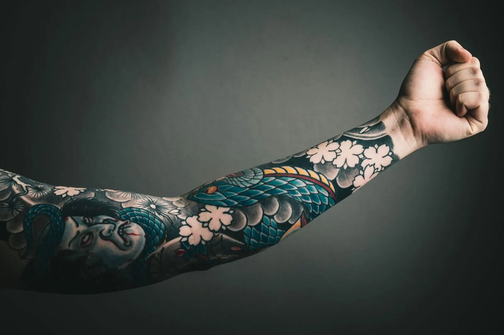
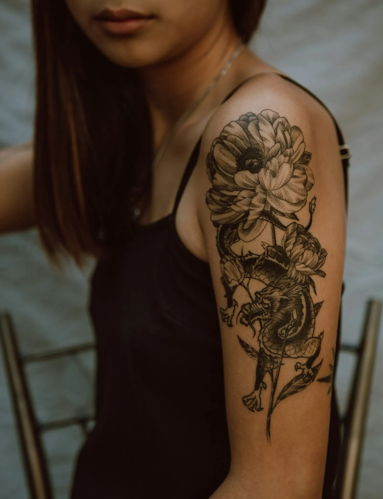
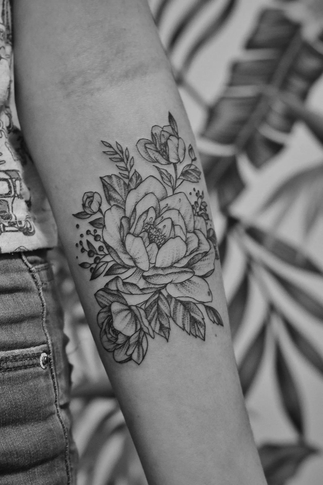
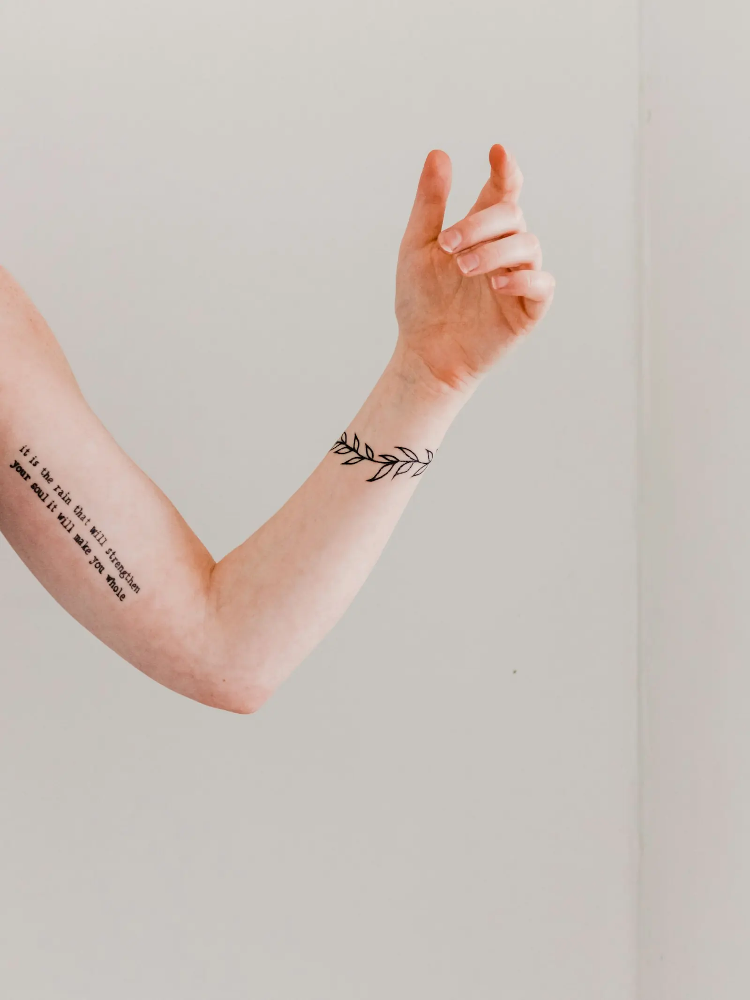
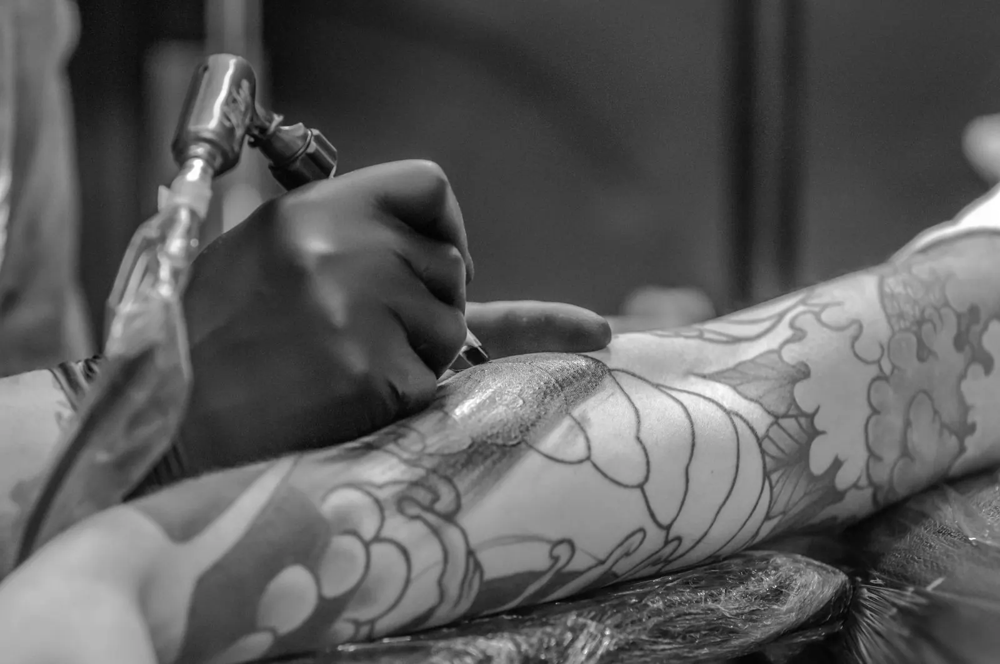
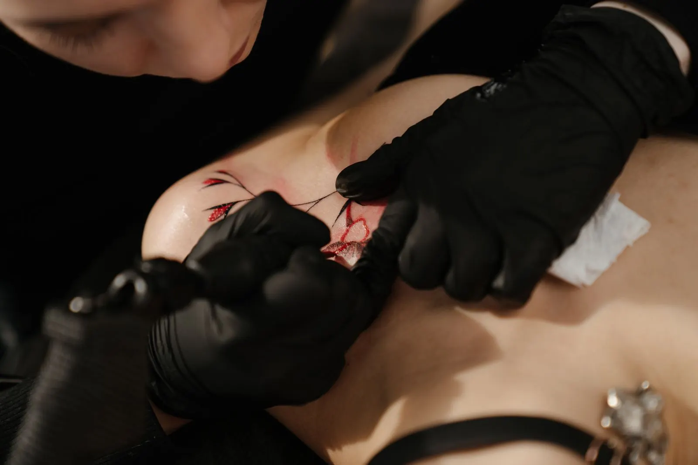

Je idee
Een foto, een krabbel op een bierviltje of gewoon een gevoel. Alles is een goed begin.
Bij Lucky 13 begint alles met een goeie babbel. Jij vertelt wat er in je hoofd zit, wij tekenen het uit tot het echt klopt. Pas dan gaat de machine aan. Geen haast, wel een ontwerp dat bij jou past.
Een eerste tattoo of al je tiende, het verloopt altijd op dezelfde manier. Je weet vooraf waar je aan toe bent en je zit nooit met vragen in de stoel.
Een foto, een krabbel op een bierviltje of gewoon een gevoel. Alles is een goed begin.
We tekenen het uit op maat van de plek waar het komt. Klopt het nog niet helemaal, dan passen we aan.
Proper, rustig en met de tijd die je tattoo nodig heeft. Even pauze nodig? Zeg het gewoon.
Je krijgt duidelijke uitleg mee naar huis. Twijfel je achteraf, dan stuur je gewoon een berichtje.
Fijne lijntjes, volle stukken of iets ertussenin. Elke tattoo wordt getekend voor de persoon die hem draagt, niet uit een map gehaald.






Een tattoo laten zetten is persoonlijk. Daarom nemen we de tijd om te luisteren, eerlijk te zijn over wat werkt en je op je gemak te zetten. Zo kom je buiten met iets waar je echt trots op bent.
Past een ontwerp niet goed op die plek of wordt het te klein om mooi te blijven, dan hoor je dat ook.
Naalden voor eenmalig gebruik en een werkplek die na elke klant volledig gepoetst wordt.
Je zit hier niet aan de lopende band. Elke afspraak krijgt de tijd die nodig is.
De eerste weken doen veel voor hoe je tattoo er later uitziet. Dit zijn de basisregels. Na je afspraak krijg je ook uitleg die past bij jouw tattoo.
Gemiddeld uit 20 reviews op Google. Dat zegt meer dan wij zelf kunnen.
Lees de reviews op GoogleStuur een berichtje met je idee, de plek waar je het wil en eventueel een foto ter inspiratie. Dan bekijken we samen wat mogelijk is en plannen we een moment in.
Ik maakte deze demo voor jullie om te tonen wat er kan. Na een kort gesprek maak ik er iets veel persoonlijkers van, helemaal naar jullie wens.
Vrijblijvend. Ik kom langs of we bellen.
Op maat, op jullie eigen domein.
Geen voorschot. Jullie betalen pas als alles klaar is.
Hosting, domeinnaam en kleine wijzigingen, zoals nieuwe openingsuren.
Omdat een voorbeeld meer zegt dan een mail. Zo zien jullie meteen wat er kan, en het kost jullie niets.
Nee. Het gesprek is vrijblijvend. Vinden jullie het niks, dan is het daarmee gedaan.
Na ons gesprek staat jullie site binnen 10 tot 14 dagen online.
Zeker. Jullie domeinnaam kan gewoon blijven, de nieuwe site komt in de plaats van de oude.
Nee, dat doe ik op basis van ons gesprek. Eigen foto's zijn mooi meegenomen, maar niet nodig om te starten.